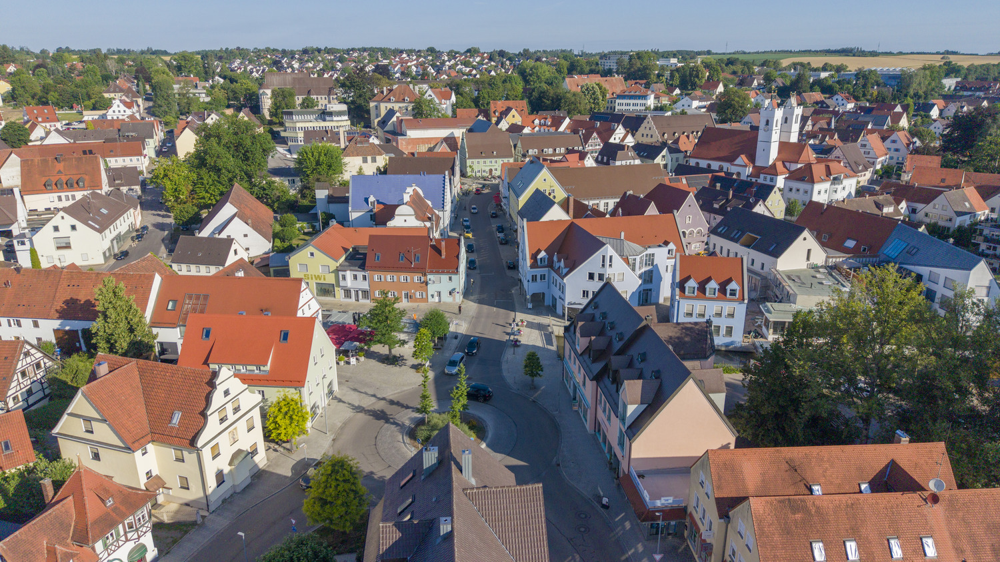

01 Wirtschaftsvereinigung Wertingen und Umgebung e.V.
Gib deinem Städtle Leben.
95 Betriebe aus Handel, Handwerk, Gastronomie und Dienstleistung. Das Netzwerk für Unternehmen in Wertingen und Umgebung.
02 Der Verein
Miteinander statt Einzelkämpfertum.
Was 1974 als Werbegemeinschaft begann, ist heute die starke Stimme der lokalen Wirtschaft. Wir vernetzen Unternehmen, schaffen Sichtbarkeit, beleben die Innenstadt und vertreten unsere Mitglieder gegenüber Stadt und Öffentlichkeit.
Ob traditionsreicher Familienbetrieb oder junges Unternehmen: Bei uns zählt das gemeinsame Ziel. Ein lebendiges, starkes und zukunftsfähiges Wertingen.
Der Vorstand
Seit der Wahl 2025 engagieren sich acht Köpfe für das Städtle.
 Katja Killisperger1. Vorsitzende
Katja Killisperger1. Vorsitzende Alexander Bischof2. Vorsitzender
Alexander Bischof2. Vorsitzender Andreas KlimeschSchatzmeister
Andreas KlimeschSchatzmeister Hans MorawBeisitzer
Hans MorawBeisitzer Katharina HanelBeisitzerin
Katharina HanelBeisitzerin Florian StepanBeisitzer
Florian StepanBeisitzer Magdalena KeißBeisitzerin
Magdalena KeißBeisitzerin Stefan KrebsBeisitzer
Stefan KrebsBeisitzer
03 Mitglieder
95 Betriebe.
Ein Städtle.

Handel & Mode Gastronomie Handwerk Dienstleistung04 Städtle-Scheck
Ein Scheck.
100 Möglichkeiten.
Freude schenken, Wertingen entdecken und unsere heimische Wirtschaft stärken.
- KaufenBei Schreibwaren Gerblinger, Garten Reiter oder der Esso-Tankstelle Klein. Oder per E-Mail bestellen.
- VerschenkenIn 5, 10, 20 und 50 Euro. Für Unternehmen bis 50 € im Monat als steuerfreier Sachbezug möglich.
- EinlösenBei den teilnehmenden Wertinger Betrieben, erkennbar am Städtle-Scheck-Zeichen.
Städtle-Scheck
20 Euro
Einlösbar bei den Mitgliedsbetrieben der Wirtschaftsvereinigung Wertingen und Umgebung e.V.

05 Termine
Events, die verbinden.
Wertinger Schlossweihnacht
Zwei Adventswochenenden im Schlossgarten rund um das Pappenheimer Schloss. Mehr als 50 Aussteller, regionale Angebote, winterliche Speisen, Schloss-Engel und Märchenerzählerin.
Rückblick 2026
- Weinpräsentation 2.0Geratshofen
- Weißwurst, Breze, Bier & Austauschbei gz-media, Bliensbach
- Interkulturelles OktoberfestZusaminsel
- Herbstmarkt WertingenInnenstadt
06 Aus dem Städtle
Mittendrin statt nur dabei.


07 Für Unternehmen
Ihr Betrieb
gehört dazu.
7,50 € im Monat
- Ihr Logo und Eintrag im Mitgliederverzeichnis
- Zusätzliche Kaufkraft über den Städtle-Scheck
- Vorgestellt auf Instagram und bei gemeinsamen Aktionen
- Netzwerktreffen mit über 90 Betrieben
90 € im Jahr per Lastschrift